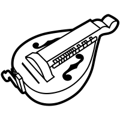
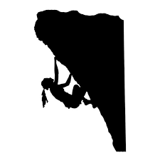

My Background

I moved to Los Angeles over 10 years ago to pursue a career in the film business. Although I garnered a successful career in that industry, I grew to realize that set life was not my primary passion. So I made the move over to Web Development and Design. The switch was a breath of fresh air and I haven’t looked back.
My time on film sets has lent me some amazing skills to apply to my current projects. Between working with clients, being on a large-scale crew and knowing the creative goal is the ‘end’ goal, the shift has been a breeze. I look forward to bringing that expertise and attitude into any new project.
Other Interests

Bardic Pasttimes
Hurdy-Gurdy, Piano
Gaming
Tabletop/RP, Board, Video

Outdoor Adventures
Rock Climbing, Camping